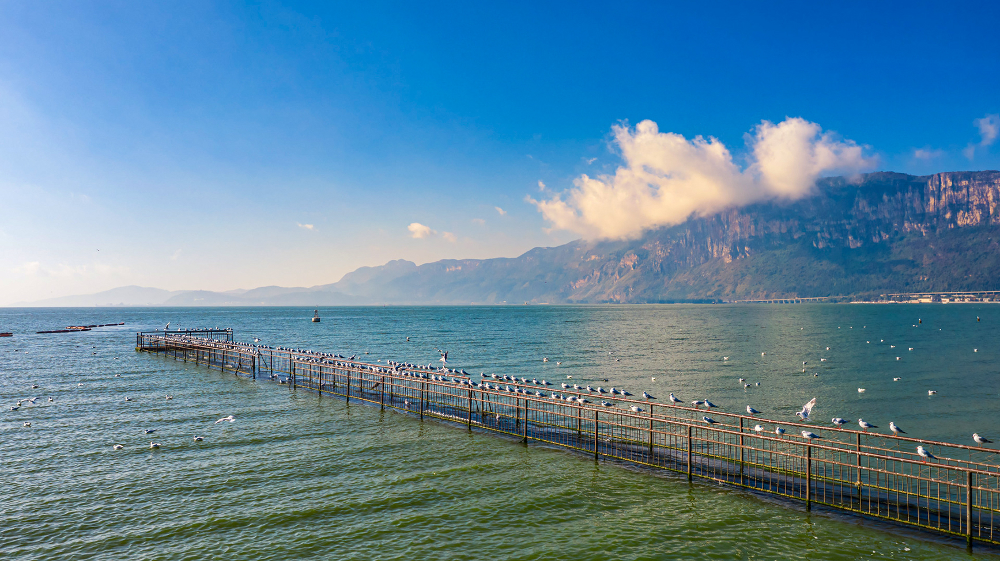

云南大学
海埂公园位于滇池的东畔，是一处风光秀美的公园，也是滇池的主要观赏地。海埂顾名思义，就是指深入滇池中的一道长堤，这条堤坝把滇池分成了两片湖泊。
滇池，亦称昆明湖、昆明池、滇南泽、滇海，在昆明市西南，有盘龙江等河流注入。滇池风光秀丽，为中国国家级旅游度假区。四周有云南民族村、云南民族博物馆、西山华亭寺、太华寺、三清阁、龙门、筇竹寺、大观楼及晋宁盘龙寺、郑和公园等风景区。度假区占地面积18平方公里。
这里沿湖绿树婆娑，搭配了橙黄色的步道，各种色彩鲜亮的雕塑，环境清新优美。如今堤坝两侧种植了草坪，沿着堤坝到湖中游览观光感觉十分不错。
每年冬天，滇池都是红嘴鸥栖息的乐园，红嘴鸥已经成了昆明冬日旅游的一张名片，无数外地游客慕名而来昆明，在滇池旁边流连忘返，主要的时间就是花在这群快乐的飞鸟精灵上，以消遣春城闲暇时光。
云南大学地球科学学院@2021~2022